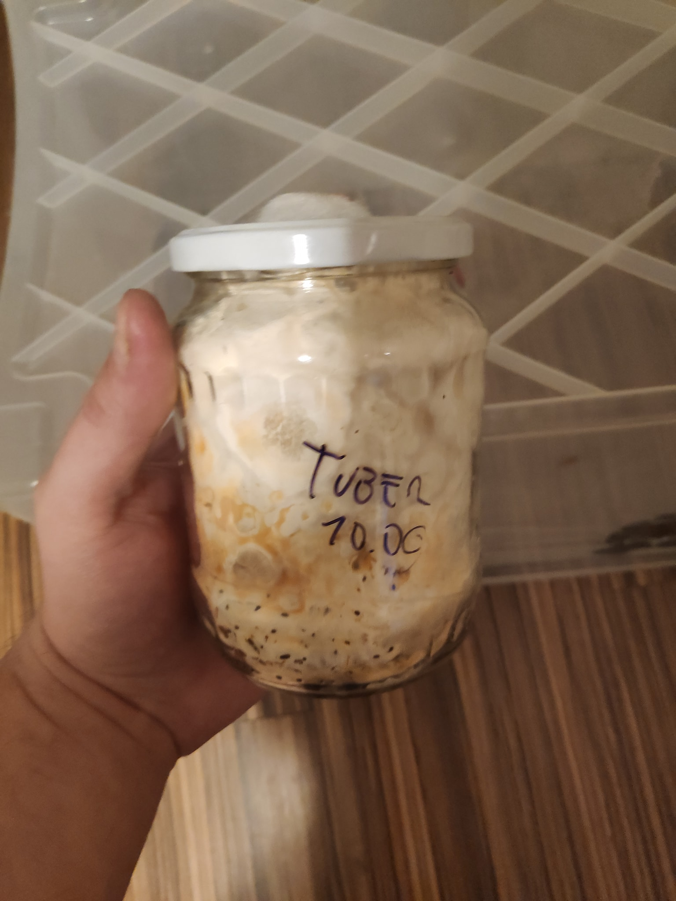

Uprawa grzybów - niezbędny sprzęt
Wiele osób pyta mnie “o co w ogóle chodzi z uprawą grzybów”? Otóż grzyby można uprawiać. Najważniejsze ekonomicznie są pieczarki i boczniaki, bardzo łatwe w uprawie gatunki, dlatego możecie znaleźć je na półce w sklepie cały rok. Po więcej szczegółów dotyczących teorii zapraszam do swojego artykułu na Wikipedii.
Uprawa grzybów bezwysiłkowa #
Najprostszym rozwiązaniem jest wpisanie w wyszukiwarkę haseł takich jak “balot boczniaka”, “kostka pieczarki”, “kostka shitake”. Można kupić tam już skolonizowane substraty, które wystarczy umieścić w odpowiednich warunkach i czekać na zbiory. To doskonały pomysł by wspomóc polską gospodarkę i rozwijać w sobie tę pasję.
Co jeśli jednak nam to nie wystarcza?
Cykl życia grzyba w domowej uprawie #
Grzyb zwykle przechodzi przez następujące etapy:
- Umieszczenie na agarze fragmentu grzyba lub zarodników
- Wzrost na agarze
- Umieszczenie na zaszczepiaczu
- Wzrost na zaszczepiaczu
- Mieszanie zaszczepiacza z substratem
- Wzrost w substracie
- Owocowanie
Jest to bardzo porządny cykl, a metody które pomijają któryś z etapów, takie jak często używane przez początkujących hodowców nielegalnych grzybów psylocybowych wstrzykiwanie zarodników bezpośrednio w zaszczepiacz i owocowanie bezpośrednio z niego, są obarczone wyższym ryzykiem niepowodzenia i mniejszymi plonami.
Co trzeba by zacząć uprawę grzybów od zera? #
By przeprowadzić uprawę grzybów od zera, będziemy potrzebować metody zapewniania sterylności przy pracy , metody zapewnienia sterylności zaszczepiacza i metody zapewnienia odpowiedniego środowiska owocowania. Tylko dwa pierwsze wymagają nietypowego sprzętu.
Sterylność przy pracy #
Kiedy będziemy pracować z agarem lub zaszczepiaczem, musimy zrobić wszystko, by nie dostały się tam zakażenia (por. poradnik identytikacji zakażeń grzybni z psilosophy).
By tego uniknąć, można stosować kilka metod:
- Komora laminarna (ceny zaczynają się od 1500zł)
- Still air box (SAB) - samodzielna produkcja to koszt w wersji ultrabudżetowej mniej niż 15zł, w normalnej - koło 50zł.
{kind=link}
Jak działa still air box? #
W powietrzu cały czas krąży olbrzymia ilość bakterii i zarodników pleśni. Komora laminarna pompuje powietrze przez filtr HEPA, a cała praca odbywa się w strumieniu powietrza wolnego od jakichkolwiek bakterii i pleśni.
Zasada działania Still air box opiera się na tym, że w nieruchomym powietrzu te bakterie i pleśni opadają.

Na zdjęciu SAB z którego obecnie korzystam. Jest wykonany z 130L pojemnika IKEA Samla, który kosztował 50zł, a otwory w nim zostały wycięte rozżarzonym skalpelem. Całość na balkonie, by zminimalizować smród topionego plastiku. Mniej estetyczne dziury uzyskamy korzystając z noża do tapet, plastik ma tendencje do pękania.
Sterylność zaszczepiacza #
Zaszczepiacz (będzie o nim więcej w następnym odcinku) to najczęściej sterylizowane żyto. Umieszcza się go w pojemnikach z filtrem powietrza.
Pojemnikiem mogą być specjalistyczne torby do uprawy grzybów (do kupienia na Aliexpress), ale można używać też słoików z zmodyfikowanymi pokrywkami.

Słoiki ze zmodyfikowaną pokrywką #
Będziemy potrzebować wiertła do metalu ~6mm i włókniny poliestrowej. Wiercimy w pokrywce, nienałożonej na słoik, otwór. Wkładamy w niego odrobinę włókniny, by dokładnie go zatkać, ale bez nadmiernego zbijania materiału.
Sterylizacja zaszczepiacza #
Zaszczepiacz sterylizować najłatwiej w szybkowarze. Jest to opcja znacznie tańsza niż autoklaw (od 1500zł używany; nowe od 3000), a wystarczająca dla naszych potrzeb.
Szybkowar powinien osiągać temperaturę 121 stopni, która zabija endpospory bakterii z rodziny Bacillaceae. By szybkowar osiągał temperaturę 121 stopni, powinien utrzymywać ciśnienie co najmniej 15 psi (~1 bar). Większość szybkowarów na rynku pozwala osiągnąć ciśnienie do 10 psi (0.7 bara), co jest niewystarczające do sterylizacji.
Oznaczenie ciśnienia znajduje się najczęściej w instrukcji lub na dnie. Musisz pytać sprzedawców lub oglądać je osobiście. Nie polecam bawić się w modyfikację szybkowarów, bo nieprawidłowe jej wykonanie może zaskutkować wybuchem.
Proponowana lista zakupów #
Proponuję kupić:
- Szybkowar (najdroższy element zestawu - najtańszy, nowy, markowy szybkowar jaki znalazłem to Kinghoff KH-4807 za 216zł)
- IKEA Samla 130L (50zł)
- Trzonek do skalpela typu 3 (~7zł)
- Ostrza do skalpela nr 11 (18zł/100 sztuk)
- Szalki Petriego 90mm (15zł/25 sztuk; początkującym zalecam kilka zestawów do ćwiczeń)
- Agar (22zł/200g)
- Jedno z podłóż: ** Ekstrakt słodowy jasny w proszku (13zł/0.5kg) ** Płatki ziemniaczane (13zł/1kg)
- Folię spożywczą (9zł/duża rolka)
- Włóknina poliestrowa 300g/m2 (10zł/dożywotni zapas)
Łącznie 360zł.
Zakładam, że masz lub możesz pożyczyć:
- Wiertło do metalu 6mm
- Palnik spirytusowy lub inny
- Wiertarkę
- Słoiki z pokrywkami do poświęcenia
Pakiet premium:
- Ezy bakteriologiczne (3zł/10 sztuk)
- Biologiczne testy sterylizacji (55zł/10 sztuk)
- Lepszy szybkowar (ceny do 3000zł za urządzenia do naprawdę masowej sterylizacji)
- Płatki drożdżowe (10zł/150g, starczy na lata)
Proponowana lista zakupów na przyszłość #
Dokładniejsze omówienie tematu substratów i pojemników będzie w przyszłości.
- Spryskiwacz, pusty.
- Żyto (3kg wystarczą na wiele miesięcy pewnie)
- Substrat stosowny do gatunku:
- Słoma (tania, ale trudna do użycia w mieszkaniu): boczniaki oprócz boczniaka królewskiego, Cyclocybe aegerita.
- Włókno kokosowe (uniwersalne, łatwe do użycia, drogie): Psilocibe cubensis, boczniak ostrygowaty. Uniwersalne, większośc gatunków rośnie.
- Wióry drewne z drzew liściastych: reishi, shiitake, soplówka jeżowata, boczniak królewski, inne boczniaki, Psilocibe azurescens.
- Pelet drewny też daje radę, ale jest wolniej kolonizowany.
- Kompost: pieczarki.
- Pojemnik stosowny do gatunku i chęci:
- Worki z filtrem do uprawy grzybów (ang. [mushroom] bags): praktycznie każdy gatunek, zwłaszcza owocujące poziomo (boczniaki).
- Plastikowe pudełka na buty (np. Curver Clearbox 5.7l, pot. shoebox): reishi, Psilocibe cubensis, pierścieniak uprawny, pieczarki.
- Plastikowy pojemnik 75 litrów (pot. monotub): większa produkcja gatunków możliwych do uprawy w pudełkach na buty. Można układać je na sobie dla jeszcze większej produkcji z tej samej przestrzeni.
Pakiet premium:
- Otręby pszenne (3.5zł/kg)
- Filtry HEPA
- Wentylatory
- Automatyczne nawilżacze powietrza
- Szklarnia balkonowa